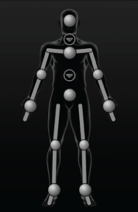
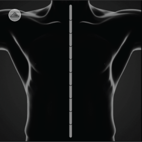
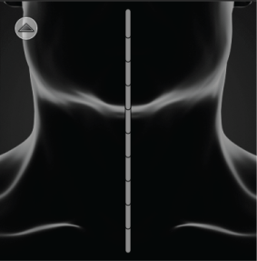

显示两足动物角色的图像以及可用于为自定义装备设置动画的效应器。该布局类似于“控制”(Controls)选项卡中的角色表示。
加载具有有效骨架定义和自定义装备的角色之后，即可开始映射效应器了。“自定义装备”(Custom Rig) 角色表示包含自定义装备的主 IK 和 FK 效应器的单元。您可以映射任意数量的这些单元。

单元状态
角色表示的每个 IK 和 FK 单元都会更新，以反映相应效应器的状态。下表介绍了每个单元的各种状态。
- 选择状态
-
IK 单元 效应器状态 选定对象。
未选中。
已指定。
已指定并选中。
注： 小的圆形单元表示膝部和肘部的上方向向量效应器。FK 单元 效应器状态 选定对象。
未选中。
已指定。
已指定并选中。
身体部位视图
通过脊椎和颈部旁边的箭头图标  ，您可以切换到缩放视图，在该视图中，可以在角色的脊椎和颈部内定义各个效应器。
，您可以切换到缩放视图，在该视图中，可以在角色的脊椎和颈部内定义各个效应器。
默认情况下，脊椎和颈部视图会显示所有 10 个 FK 单元。为角色创建新的自定义装备映射后，该视图将更新以仅显示在骨架定义过程中初始映射的 FK 单元。
|

|

|